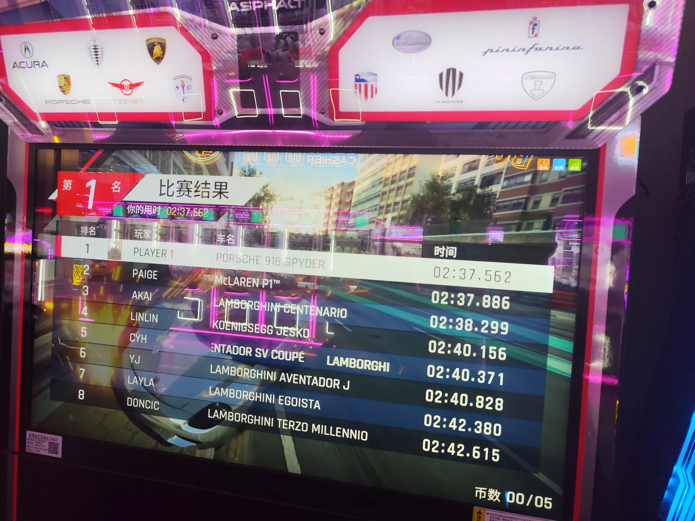
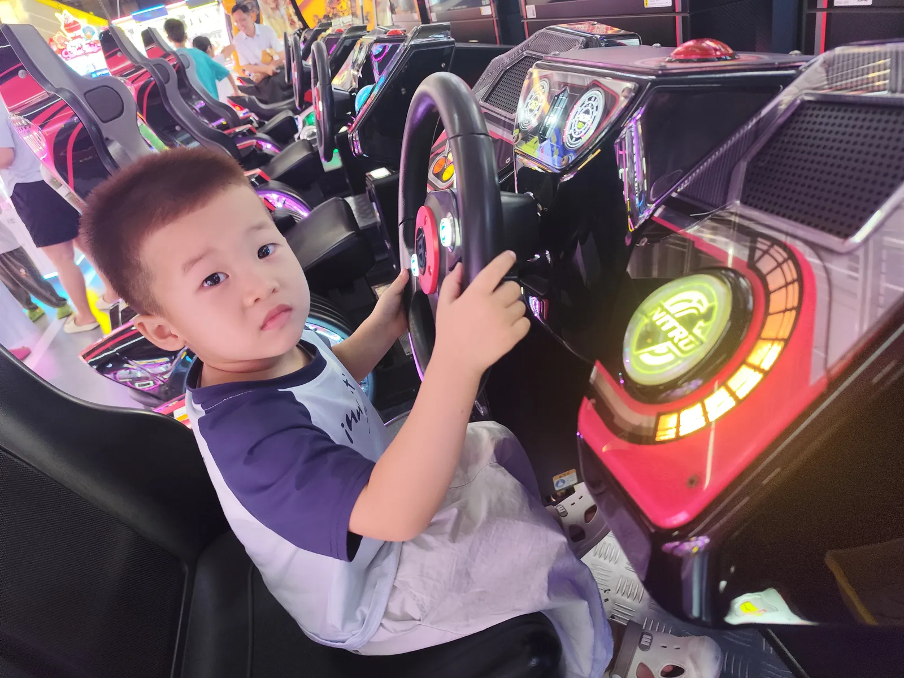

Journal 路 2026-08-02
姹熻タ鐪佷節姹熷競婵傛邯鍖?/p>
浠婂ぉ鍢涳紝鎴戜竴鐩撮兘鍦ㄦ睙瑗跨渷涔濇睙甯傛總婧尯銆?/p>
鍡紝鏃╀笂鎴戠叜浜嗛潰鏉★紝娉￠潰鍜屾寕闈竴璧风叜鐨勩€傚棷锛屼笅鍗堟垜鍙堢粦瀹氫簡鎴戣嚜宸辩殑鍩熷悕锛屾垜鐨勪笓灞炲煙鍚嶏紝newtnorlly.xyz銆傛垜鍙戠幇鍩熷悕涓€涓嬪瓙灏辩粦瀹氭垚鍔熶簡銆傜劧鍚庝笅鍗堢殑鏃跺€欙紝鍡紝鎴戠殑琛ㄥ甯︾潃鎴戝幓璺熸垜鐨勫鐢ヤ竴璧风帺锛屾垜涓€涓笅鍗堥兘鏄湪璺熺潃鎴戠殑澶栫敟鍘荤數鍔ㄦ父鎴忓煄閲屾墦鐢靛姩銆備粬鐗瑰埆鍠滄璧涜溅锛屽湪璧涜溅鏈轰笂寰椾簡绗竴鍚嶃€?/p>

澶栫敟涓€鐪嬪埌鎴戝氨鐗瑰埆楂樺叴锛屾垜鍧愪笂鍓┚椹讹紝浠栧氨浠庡悗鎺掔埇杩囨潵鎽告懜鎴戠殑澶达紝浠夸經鎴戞槸浠栫殑澶栫敟涓€鏍枫€備粬鐗瑰埆鍠滄鏈変汉闄潃锛岃€屼笖鐗瑰埆鍠滄璺熷埆浜鸿亰澶╋紝鑱婁簺鏈夌殑娌＄殑锛屽氨璺熸垜浠緢澶氫汉娌′簨鎵捐眴鍖呰亰澶╀竴鏍枫€?/p>
鍛冿紝鍦ㄦ垜琛ㄥ鐨勮溅涓婏紝鎴戠殑澶栫敟鐖埌鍓┚椹讹紝鐒跺悗绔欏湪鎴戦潰鍓嶃€備粬璺熸垜璇达細銆屾妸浣犵殑鍢村反鎵撳紑鍟娿€傘€嶇劧鍚庢垜灏辨寜鐓т粬鐨勮姹傚紶寮€鍢村反锛屼粬灏辩揣鐩潃鎴戝槾宸撮噷闈㈡湁浠€涔堜笢瑗裤€備粬闂細銆屼綘鍢村反閲岄潰涓轰粈涔堟湁钃濊壊鐨勶紵銆嶆垜鎯充簡鎯筹紝搴旇鏄垜鑸屽ご涓婄殑鑸岃嫈涓嬮潰鐨勯潤鑴夊惂銆傜劧鍚庢垜鍙堢敤鎵嬫満鎽勫儚澶寸収鐫€鐪嬩簡鐪嬶紝鍙戠幇浠栬鐨勮摑鑹蹭笢瑗跨‘瀹炴槸鎴戣垖澶磋垖鑻斾笅闈㈢殑闈欒剦锛屽憟鐜板嚭闈掕摑鑹茬殑鎰熻銆傛垜绐佺劧闂村彂鐜拌繖涓皬鏈嬪弸瑙嗗姏濂藉ソ鍛€锛岃€屼笖瑙傚療寰楃壒鍒粩缁嗐€傚搰濉烇紝鐪熺殑鏄お鏈夋剰鎬濅簡銆?/p>
鎴戠殑琛ㄥ鍜屽ス鐨勯椇铚滀竴璧峰幓閫涜浜嗭紝濂逛滑灏辨妸澶栫敟閮界粰鎴戞潵甯︺€傚棷锛屽氨鏄憡璇夋垜瑕佸甫澶栫敟鍘荤數鐜╁煄閲岀帺銆傛垜杩樿浠栧鐜╀簡40涓父鎴忓竵锛屽洜涓烘垜鏈変袱涓井淇¤处鍙凤紝娉ㄥ唽涓€娆″氨鍏嶈垂棰?0涓紒

鍥犱负澶栫敟鐗瑰埆鐗瑰埆闂逛汉锛屽氨鏄垜鐨勮〃濮愪細瀚屾垜鐨勫鐢ュお鍚碉紝澶儲锛岃繕瑕佹姳锛屾墍浠ユ瘡娆￠€涜锛岃〃濮愰兘浼氬敖閲忎笉甯︿笂澶栫敟锛屽敖閲忓拰鑷繁鐨勯椇铚滀竴璧烽€涜銆?/p>
鏅氫笂鍚冨畬閭ｄ釜涓蹭覆棣欎箣鍚庯紝琛ㄥ寮€杞﹂€佹垜鍥炲銆傝〃濮愮殑闂鸿湝鍧愬湪鍓┚椹讹紝鎴戝拰澶栫敟鍧愬湪鍚庢帓銆傚鐢ヤ竴鐩撮棶鎴戯細銆岃垍鑸咃紝鍘绘垜瀹跺ソ涓嶅ソ鍟︼紵銆嶆垜灏辫窡浠栬В閲婏細銆屾垜涓嶅幓浣犲锛屾垜瑕佸幓杈呭浣犵殑灏忚垍鍜屽皬濮ㄧ殑鍔熻銆傘€?/p>
澶栫敟涓嶆兂鑷繁澶け鏈涳紝灏变竴鐩存兂瑕侀棶鎴戯紝涓€鐩存兂瑕佽鏈嶆垜銆傝繃鍚庝粬鐨勫濡堝憡璇変粬涓€鎷涳細銆屼綘灏遍棶鑸呰垍鍦ㄤ笂瀛﹀墠鐨勫嚑澶╋紝灏辨槸鏀惧亣鐨勬渶鍚庡嚑澶╋紝鍘绘垜浠濂戒笉濂藉暒锛熶綘灏辩洿鎺ラ棶浠栦笂瀛﹀墠鐨勬渶鍚庡嚑澶╋紝鍘绘垜浠濂戒笉濂藉暒锛熴€嶅鐢ュ氨瀛︾潃浠栧濡堢殑璇存硶锛屽氨缁х画闂垜銆?/p>
鎴戝綋鐒跺緢鎰熷姩鍛€锛屼篃鎰熻寰堟俯鏆栧憖锛屽氨鐩存帴绛斿簲涓嬫潵浜嗐€?/p>
璇村疄璇濆湪浜虹敓鐨勭幇闃舵锛屾煇涓浜烘垨鏈嬪弸閭€鎴戝嚭鍘荤帺锛屾垜鐪熺殑骞朵笉鏄壒鍒叴濂嬶紝鍥犱负鎴戞墜澶翠笂鏈夊緢澶氬皬椤圭洰鍢涖€備絾鏄〃濮愮殑鐢佃瘽閭ｅご锛屽嚭鐜颁簡澶栫敟鐨勫０闊筹紝浠栦竴鐩村枈鎴戙€岃垍鑸咃紝鑸呰垍锛岃垍鑸呫€嶏紝浠栦竴鐩存兂瑕佹壘鎴戣窡浠栫帺锛屾垜渚挎儏闅捐嚜宸诧紝娉敱蹇冪敓銆?/p>
浠ュ悗涓嶈兘杞绘槗鐢熷皬瀛╀簡锛屼竾涓€鐢熷嚭杩欎箞鍙埍鐨勭敇鍑冲嚦锛堣繖灏辨槸鎴戝鐢ョ殑灏忓悕锛夛紝鎴戠殑涓€鐢熶及璁￠兘浼氳浠栧崰鎹惂銆?/p>
鍡紝鏅氫笂鍚冧簡鐜夋灄涓蹭覆棣欏憖锛岀帀鏋椾覆涓查鏄釜搴楀悕銆傚棷锛屾槸鐨勩€傜劧鍚庡洖鏉ョ殑鏃跺€欐壘鍏叡鍘曟墍娌℃壘鍒般€傚棷锛屾櫄涓婂張鍚冧簡澶滃锛屽氨鏄垜鐨勮垍鑸咃紝浠庨偅涓嫃鏍奸噷宀涚粰鎴戝甫浜嗕竴妗堕浮缈呮牴銆傛垜鍦ㄥ倣鏅氱殑鏃跺€欏張鐪嬩簡涓€闆嗙憺鍏嬪拰鑾拏鐨勮В璇淬€傝锛岄偅涓€闆嗕腑鎴戜滑鐭ラ亾閭ｄ釜鐟炲厠浠栧叾瀹炴槸鍚姩浜嗗嚖鍑拌鍒掞紝鏃╂棭灏卞惎鍔ㄤ簡锛屼粬鏈夊ソ澶氫釜澶嶅埗浜哄搴綔涓哄亣鐩爣鏉ヨ閭ｄ簺鏁屼汉鏉ユ墦鍑讳粬锛?/p>
Today I stayed in Lianxi District, Jiujiang, Jiangxi the whole day.
Yeah, in the morning I cooked noodles鈥攊nstant noodles and dried noodles boiled together. In the afternoon I bound my own domain, my very own domain, newtnorlly.xyz. It turned out the domain binding went through just like that. Then in the afternoon, my older cousin took me to hang out with her son. I spent the whole afternoon at the arcade with my nephew. He really loves racing games鈥攈e got first place on the racing cabinet.
My nephew was so happy the moment he saw me. I sat in the passenger seat, and he climbed over from the back row to pat my head, as if I were his nephew. He really loves having someone around, and he loves chatting about this and that, just like how many of us chat with an AI bot when we're bored.
Uh, in my cousin's car, my nephew climbed to the front passenger seat and stood right in front of me. He said: "Open your mouth." So I opened my mouth as he asked, and he stared intently inside to see what was there. He asked: "Why is there something blue inside your mouth?" I thought about it鈥攑robably the veins under the coating on my tongue. Then I used my phone's camera to take a look, and sure enough, the blue thing he spotted was the vein beneath my tongue coating, with a bluish-green tint. It suddenly hit me: this kid has amazing eyesight and is incredibly observant. Wow, that was really fascinating.
My older cousin and her bestie went shopping together, so they handed my nephew over to me to take care of. Yep, she told me to take him to the arcade. I even got him 40 extra game tokens, because I have two WeChat accounts and each gets 20 free tokens just for signing up!
My nephew is super super noisy鈥攎y older cousin finds him too loud, too clingy, always wanting to be carried. So whenever she goes shopping, she tries her best not to bring him along, preferring to shop just with her bestie.
After the Chuanchuanxiang dinner, my cousin drove me home. Her bestie sat in the front passenger seat, while me and my nephew were in the back. My nephew kept asking me: "Uncle, won't you come to my place?" I had to explain: "I can't, I need to go tutor your little uncle and little aunt with their homework."
My nephew didn't want to be disappointed, so he kept asking, kept trying to convince me. Later his mom taught him a trick: "Just ask your uncle鈥攁 few days before school starts, the last few days of break, can you come to our place? Just ask him directly: the last few days before school, come to our place, okay?" So my nephew copied his mom and kept asking me that.
Of course I was really touched, felt so warm inside, and I just agreed right away.
Honestly, at this stage of my life, when a family member or friend invites me out, I'm not really all that excited鈥攂ecause I've got so many little projects on my hands. But then my cousin called, and through the phone I heard my nephew's voice. He kept calling "Uncle, Uncle, Uncle," kept wanting me to come play with him. I couldn't help myself鈥攖ears welled up from deep inside.
I really shouldn't have kids too easily in the future. What if I end up with someone as adorable as Gan Dengdeng (that's my nephew's nickname)? My whole life would probably be taken over by him.
Yeah, in the evening we had Yulin Chuanchuanxiang鈥擸ulin Chuanchuanxiang is the name of the restaurant. Yep. And on the way back I couldn't find a public restroom. Then at night I had a late-night snack鈥攎y uncle brought me a bucket of chicken drumettes from Sugeli Island. In the early evening I watched another episode of Rick and Morty commentary. Hey, in that episode we learned that Rick actually launched the Phoenix Protocol way early. He had tons of decoy families set up as fake targets to draw enemy fire!
Aujourd'hui je suis rest茅 toute la journ茅e dans le district de Lianxi, 脿 Jiujiang, Jiangxi.
Ouais, le matin j'ai fait cuire des nouilles鈥攄es nouilles instantan茅es et des nouilles s猫ches bouillies ensemble. L'apr猫s-midi, j'ai li茅 mon propre nom de domaine, mon nom de domaine 脿 moi, newtnorlly.xyz. Il s'est av茅r茅 que la liaison de domaine est pass茅e tout de suite. Puis dans l'apr猫s-midi, ma cousine plus 芒g茅e m'a emmen茅 passer du temps avec son fils. J'ai pass茅 tout l'apr猫s-midi 脿 la salle d'arcade avec mon neveu. Il adore vraiment les jeux de course鈥攊l a fini premier sur la borne de course.
Mon neveu 茅tait tellement content d猫s qu'il m'a vu. Je me suis assis c么t茅 passager, et il a grimp茅 depuis la banquette arri猫re pour me tapoter la t锚te, comme si c'茅tait moi son neveu. Il adore avoir de la compagnie, et il adore papoter de tout et de rien, un peu comme nous tous quand on discute avec un chatbot.
Euh, dans la voiture de ma cousine, mon neveu a grimp茅 jusqu'au si猫ge passager avant et s'est plant茅 devant moi. Il m'a dit : 芦 Ouvre la bouche. 禄 Alors j'ai ouvert la bouche comme il demandait, et il a fix茅 l'int茅rieur pour voir ce qu'il y avait dedans. Il m'a demand茅 : 芦 Pourquoi il y a du bleu dans ta bouche ? 禄 J'ai r茅fl茅chi鈥攕ans doute les veines sous le d茅p么t sur ma langue. Puis j'ai utilis茅 la cam茅ra de mon t茅l茅phone pour regarder, et effectivement, le truc bleu qu'il avait rep茅r茅, c'茅tait la veine sous le d茅p么t de ma langue, avec une teinte bleu-vert. J'ai soudain r茅alis茅 que ce petit avait une vue incroyable et qu'il observait avec une pr茅cision folle. Wow, c'茅tait vraiment fascinant.
Ma cousine et sa meilleure amie sont parties faire du shopping ensemble, alors elles m'ont refil茅 mon neveu. Ouais, elle m'a dit de l'emmener 脿 la salle d'arcade. Je lui ai m锚me eu 40 jetons de jeu en plus, parce que j'ai deux comptes WeChat et chaque inscription donne 20 jetons gratuits !
Mon neveu est super super bruyant鈥攎a cousine le trouve trop bruyant, trop collant, il veut toujours 锚tre port茅. Alors 脿 chaque fois qu'elle fait du shopping, elle essaie de ne pas l'emmener, pr茅f茅rant sortir juste avec sa meilleure amie.
Apr猫s le d卯ner au Chuanchuanxiang, ma cousine m'a ramen茅 en voiture. Sa meilleure amie 茅tait 脿 l'avant c么t茅 passager, moi et mon neveu 脿 l'arri猫re. Mon neveu n'arr锚tait pas de me demander : 芦 Tonton, tu viens chez moi, hein ? 禄 J'ai d没 lui expliquer : 芦 Je ne peux pas, je dois aller aider ton petit oncle et ta petite tante avec leurs devoirs. 禄
Mon neveu ne voulait pas 锚tre d茅莽u, alors il a continu茅 脿 me poser la question, 脿 essayer de me convaincre. Plus tard, sa maman lui a appris une astuce : 芦 Demande 脿 ton tonton : quelques jours avant la rentr茅e, les derniers jours des vacances, tu viens chez nous, hein ? Demande-lui direct : les derniers jours avant l'茅cole, tu viens chez nous, hein ? 禄 Alors mon neveu a copi茅 sa maman et a continu茅 脿 me le demander.
Bien s没r, j'茅tais vraiment touch茅, 莽a m'a tellement r茅chauff茅 le c艙ur, et j'ai tout de suite accept茅.
Honn锚tement, 脿 ce stade de ma vie, quand un membre de ma famille ou un ami m'invite 脿 sortir, je ne suis pas vraiment excit茅鈥攑arce que j'ai plein de petits projets en cours. Mais quand ma cousine a appel茅, et que j'ai entendu la voix de mon neveu au t茅l茅phone, il n'arr锚tait pas de dire 芦 Tonton, Tonton, Tonton 禄, il voulait tellement que je vienne jouer avec lui. Je n'ai pas pu me retenir鈥攍es larmes me sont venues du plus profond du c艙ur.
Faudra pas faire d'enfant trop facilement 脿 l'avenir. Imaginez si j'en avais un aussi adorable que Gan Dengdeng (c'est le surnom de mon neveu) ? Ma vie enti猫re serait probablement envahie par lui.
Ouais, le soir on a mang茅 du Chuanchuanxiang de Yulin鈥擸ulin Chuanchuanxiang, c'est le nom du resto. Oui. Et sur le chemin du retour, j'ai pas trouv茅 de toilettes publiques. Puis la nuit, j'ai pris une collation tardive鈥攎on oncle m'a ramen茅 un seau de pilons de poulet de l'卯le de Sugeli. En d茅but de soir茅e, j'ai regard茅 un autre 茅pisode d'analyse de Rick and Morty. Eh, dans cet 茅pisode on apprend que Rick avait en fait lanc茅 le Protocole Ph茅nix bien plus t么t. Il avait des tas de familles leurres install茅es comme fausses cibles pour que les ennemis s'en prennent 脿 elles !
Heute war ich den ganzen Tag im Bezirk Lianxi, Jiujiang, Jiangxi.
Ja, morgens habe ich Nudeln gekocht鈥擨nstantnudeln und getrocknete Nudeln zusammen gekocht. Nachmittags habe ich meine eigene Domain gebunden, meine ganz eigene Domain, newtnorlly.xyz. Es stellte sich heraus, dass die Domain-Bindung einfach so durchging. Dann am Nachmittag hat mich meine 盲ltere Cousine mitgenommen, um Zeit mit ihrem Sohn zu verbringen. Ich habe den ganzen Nachmittag mit meinem Neffen in der Spielhalle verbracht. Er liebt Rennspiele wirklich鈥攅r hat den ersten Platz am Rennautomaten geholt.
Mein Neffe war so gl眉cklich, sobald er mich sah. Ich sa脽 auf dem Beifahrersitz, und er krabbelte von der R眉ckbank r眉ber, um mir den Kopf zu t盲tscheln, als w盲re ich sein Neffe. Er liebt es einfach, jemanden um sich zu haben, und er plaudert gern 眉ber dies und das, so wie viele von uns mit einem Chatbot quatschen.
脛h, im Auto meiner Cousine krabbelte mein Neffe zum Beifahrersitz und stellte sich direkt vor mich hin. Er sagte: 鈥濵ach deinen Mund auf." Also machte ich meinen Mund auf wie verlangt, und er starrte gespannt hinein, um zu sehen, was da drin war. Er fragte: 鈥濿arum ist da was Blaues in deinem Mund?" Ich 眉berlegte鈥攚ahrscheinlich die Venen unter dem Belag auf meiner Zunge. Dann schaute ich mit der Handykamera nach, und tats盲chlich, das blaue Ding, das er entdeckt hatte, war die Vene unter meinem Zungenbelag, mit einem bl盲ulich-gr眉nen Schimmer. Mir wurde pl枚tzlich klar: Dieses Kind hat eine wahnsinnig gute Sehkraft und beobachtet unglaublich genau. Wow, das war echt faszinierend.
Meine 盲ltere Cousine und ihre beste Freundin gingen zusammen shoppen, also dr眉ckten sie mir meinen Neffen in die Hand. Ja, sie sagte mir, ich solle ihn in die Spielhalle bringen. Ich habe ihm sogar 40 extra Spielmarken besorgt, weil ich zwei WeChat-Konten habe und jede Anmeldung 20 kostenlose Marken gibt!
Mein Neffe ist super super laut鈥攎eine Cousine findet ihn zu laut, zu anh盲nglich, er will st盲ndig getragen werden. Also versucht sie bei jedem Einkaufsbummel, ihn nicht mitzunehmen, und geht lieber allein mit ihrer besten Freundin.
Nach dem Chuanchuanxiang-Abendessen fuhr mich meine Cousine nach Hause. Ihre beste Freundin sa脽 vorn auf dem Beifahrersitz, ich und mein Neffe hinten. Mein Neffe fragte mich immer wieder: 鈥濷nkel, kommst du zu uns, ja?" Ich musste ihm erkl盲ren: 鈥濱ch kann nicht, ich muss deinem kleinen Onkel und deiner kleinen Tante bei den Hausaufgaben helfen."
Mein Neffe wollte nicht entt盲uscht sein, also fragte er immer weiter, versuchte mich zu 眉berreden. Sp盲ter brachte ihm seine Mama einen Trick bei: 鈥濬rag deinen Onkel: ein paar Tage bevor die Schule anf盲ngt, die letzten Ferientage, kommst du zu uns, ja? Frag ihn einfach direkt: die letzten Tage vor der Schule, komm zu uns, ja?" Also machte mein Neffe es seiner Mama nach und fragte mich immer weiter.
Nat眉rlich war ich total ger眉hrt, f眉hlte mich so warm von innen, und ich sagte einfach sofort zu.
Ehrlich gesagt, in dieser Lebensphase, wenn mich ein Familienmitglied oder Freund einl盲dt auszugehen, bin ich nicht wirklich begeistert鈥攊ch habe so viele kleine Projekte am Laufen. Aber dann rief meine Cousine an, und durchs Telefon h枚rte ich die Stimme meines Neffen. Er rief immer wieder 鈥濷nkel, Onkel, Onkel", er wollte unbedingt, dass ich mit ihm spiele. Ich konnte nicht anders鈥攎ir stiegen Tr盲nen aus tiefstem Herzen auf.
Ich sollte in Zukunft nicht zu leichtfertig Kinder kriegen. Stell dir vor, ich bek盲me jemanden so Liebenswertes wie Gan Dengdeng (das ist der Spitzname meines Neffen)? Mein ganzes Leben w眉rde wahrscheinlich von ihm eingenommen werden.
Ja, abends haben wir Yulin Chuanchuanxiang gegessen鈥擸ulin Chuanchuanxiang ist der Name des Restaurants. Jap. Und auf dem R眉ckweg habe ich keine 枚ffentliche Toilette gefunden. Dann nachts hatte ich noch einen sp盲ten Snack鈥攎ein Onkel brachte mir einen Eimer H盲hnchenunterkeulen von der Insel Sugeli mit. Am fr眉hen Abend habe ich noch eine Folge Rick and Morty Erkl盲rvideo geschaut. Hey, in der Folge haben wir erfahren, dass Rick das Ph枚nix-Protokoll schon viel fr眉her gestartet hatte. Er hatte massenhaft Lockvogel-Familien als falsche Ziele aufgestellt, damit die Feinde auf die losgehen!